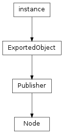

This section describes the base classes for all node classes that libavg provides.

To be rendered, a Node must be part of a scene graph. Scene graphs are trees of Node objects associated with a Canvas. A CanvasNode is at the root of each scene graph. Scene graphs are pure tree structures, so each Node only has one parent node. Nodes that are not linked to a canvas are not rendered. Any media that these nodes need are loaded from disk, however.
libavg Node classes make heavy use of inheritance. Concepts like id, position and opacity are defined in base classes and can be used in any of the subclasses.
Note
To reduce redundancy in the reference, inherited methods and attributes are not mentioned in the derived class documentation - follow the link to the base class to access them. This also applies to constructor parameters: When constructing an object of a derived class, constructor parameters of the base classes are also accepted.
There are several ways of constructing a node. The reference documentation follows the python constructor syntax. The parameters remain the same in all syntactic variations, however. The options for construction are as follows:
- Use the standard python constructor:
Nodes can be created using a standard python constructor. As an example:
node = ImageNode(id="background", href="sunset.png", pos=(0,0), parent=rootNode)Parameters to a node constructor are always named parameters. Nodes never have positional constructor parameters.
- Use Player.createNode():
There are two ways to create a node using createNode:
node = player.createNode("image", {"id":"background", "href":"sunset.png", "pos":(0,0), "parent":rootNode})and:
node = player.createNode( """<image id="background" href="sunset.png" pos="(0,0)"/>""")Using the second option, complete trees of nodes can be constructed in one statement.
- Load it from an avg file:
Complete scene graphs for onscreen display can be loaded from disk using Player.loadFile():
root = player.loadFile("scene.avg")- Create a complete scene graph using inline xml:
Player.loadString() allows using an avg-formatted xml string to create a scene graph of nodes:
root = player.loadString(""" <avg size="(800,600)"> <image id="background" href="sunset.png" pos="(0,0)"/> </avg> """)The methods Player.loadFile() and Player.loadString() create onscreen scene graphs. Player.loadCanvasFile() and Player.loadCanvasString() are the equivalent methods for offscreen canvases.
Bases: libavg.avg.Publisher
Base class for everything that can be put into an avg tree. This is an abstract class.
Messages:
All cursor and hover messages are emitted only if the cursor is above the Node and active as well as sensitive are True. The message parameters are of type CursorEvent. The CURSOR messages are emitted for mouse and touch events. The HOVER events are emitted for touch devices which can sense hands approaching the surface before the actual touch.
To get these messages, call Publisher.subscribe().
- CURSOR_DOWN(cursorevent)¶
Emitted whenever a mouse button is pressed or a new touch is registered.
- CURSOR_MOTION(cursorevent)¶
Emitted whenever a mouse or a touch moves.
- CURSOR_UP(cursorevent)¶
Emitted whenever a mouse button is released or a touch leaves the surface.
- HOVER_DOWN(cursorevent)¶
Emitted whenever a new hover cursor is registered.
- HOVER_MOTION(cursorevent)¶
Emitted whenever a hover cursor moves.
- HOVER_UP(cursorevent)¶
Emitted whenever a hover cursor disappears.
- SIZE_CHANGED(newSize)¶
Emitted whenever the size of the node changes. This includes any python calls that change the size. In addition, image loading (for ImageNode), opening of video files (for VideoNode) and changes in the text displayed (in the case of WordsNode) can trigger SIZE_CHANGED() messages. Note that changing the size of a node inside a SIZE_CHANGED() handler will lead to an additional recursive invocation of SIZE_CHANGED().
RectNode and all classes derived from AreaNode support this message.
A unique identifier that can be used to reference the node, for instance using Player.getElementByID(). Read-only.
A DivNode that the node will become a child of. When used as a constructor parameter, this is equivalent to calling DivNode.appendChild() directly after construction. Read-only.
If this attribute is true, the node behaves as usual. If not, it is neither drawn nor does it react to events.
A measure of the node’s transparency. 0.0 is completely transparent, 1.0 is completely opaque. Opacity is relative to the parent node’s opacity.
A node only reacts to events if sensitive is true.
Deprecated since version 1.8: Use the message interface instead.
Sets a callback function that is invoked whenever an event of the specified type from the specified source occurs. Unlike setEventHandler(), this method allows several handlers for one type/source-combination. To remove a handler installed using connectEventHandler(), call disconnectEventHandler().
| Parameters: |
|
|---|
Deprecated since version 1.8: Use the message interface instead.
Removes one or more event handlers from the node’s table of event handlers. If several event handlers conform to the parameters given, all are removed. It is an error if no matching event handler exists.
| Parameters: |
|
|---|
Transforms a position in coordinates relative to the node to a position in window coordinates.
Returns the topmost child node that is at the position given. pos is in coordinates relative to the called node. The algorithm used is the same as the cursor hit test algorithm used for events.
Deprecated since version 1.8: Use parent instead.
Returns the container (AVGNode or DivNode) the node is in. For the root node (or if the node is not connected), returns None.
Transforms a position in window coordinates to a position in coordinates relative to the node.
Needs to be called when deriving from a Node class in python in the derived classes __init__() method.
Restores normal cursor event handling after a call to setEventCapture(). cursorid is the id of the cursor to release. If cursorid is not given, the mouse cursor is used.
Sets up event capturing so that cursor events are sent to this node regardless of the cursor position. cursorid is optional; if left out, the mouse cursor is captured. If not, events from a specific tracker cursor are captured. The event propagates to the capturing node’s parent normally. This function is useful for the implementation of user interface elements such as scroll bars. Only one node can capture a cursor at any one time. Normal operation can be restored by calling releaseEventCapture().
Deprecated since version 1.7: Use the message interface instead.
Sets a callback function that is invoked whenever an event of the specified type from the specified source occurs. This method removes all other event handlers from this type/source-combination.
| Parameters: |
|
|---|
Removes a node from its parent container and optionally deletes all resources the node holds. In the default case, unlink() is equivalent to node.getParent().removeChild(node.getParent().indexOf(node)), except that if the node has no parent, unlink does nothing. Also in the default case, textures are moved back to the CPU and event handlers are preserved.
If kill=True, textures are not moved back. Event handlers for events routed to this node are reset, all textures are deleted and the href is reset to empty in this case, saving some time and making sure there are no references to the node left on the libavg side. kill should always be set to True if the node will not be used after the unlink.
Bases: libavg.avg.ExportedObject
libavg supports event handling and callbacks through a publish/subscribe interface. Publisher is the base class for all classes that send messages. Derived classes can send messages of arbitrary types. The base class takes care of managing a list of subscribers for each message type and sending the message to each subscriber.
Many libavg classes, including Node, Player, Contact and the Recognizer classes derive from publisher. In addition, it is possible to derive from Publisher in client code by calling the methods in the protected interface.
Registers a subscriber for the given messageID. The callable for all subscribers is invoked whenever the publisher sends out the message with this ID.
subscribe() returns a subscriberID that can be used to unsubscribe if this becomes necessary. The subscription is also terminated if either the publisher or the subscriber is deleted. The Publisher class works with weak references to subscribers when possible, so this should happen automatically in most cases. The exception is when callable is an anonymous function (a lambda expression). In this case, the Publisher needs to hold a reference to the callable to keep it from being deleted immediately and unsubscribe() needs to be called manually.
Removes a subscriber from the list of subscribers for messageID. The subscriber is either determined by the subscriberID returned from subscribe() or by the callable attached to the subscription.
Protected Interface:
To be called from derived classes.
- publish(messageID)¶
Registers a messageID so that interested parties can subscribe to this message.
- notifySubscribers(messageID, argsList)¶
Invokes all callables registered for this messageID using the list of args passed. Subscribers are called synchronously; the order of invokation is undefined.